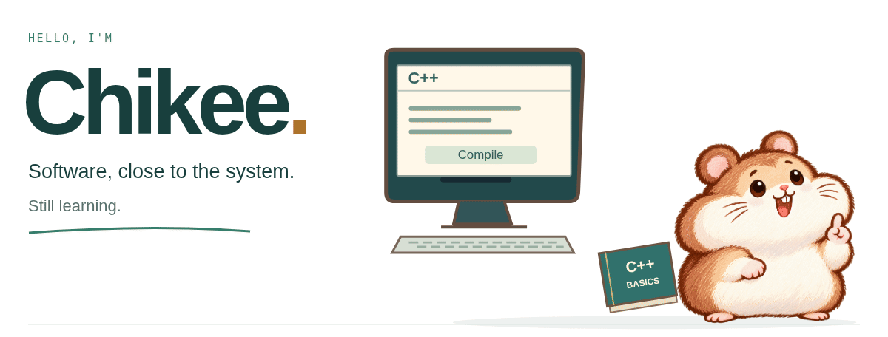

Where the pieces meet
I work with C/C++ and embedded systems — software architecture, cross-platform integration, and getting things to run on Linux and QNX.
I like the part where the pieces have to fit: the build, the deployment, and what actually happens at runtime.

A workbench of my own
Here on GitHub, I tinker with Linux workstations and developer tools — how a development environment looks, feels, and fits together. A current rabbit hole: wallpaper-driven desktop themes.

A little trail of activity

About that one error…
One error. Several pages of explanation.